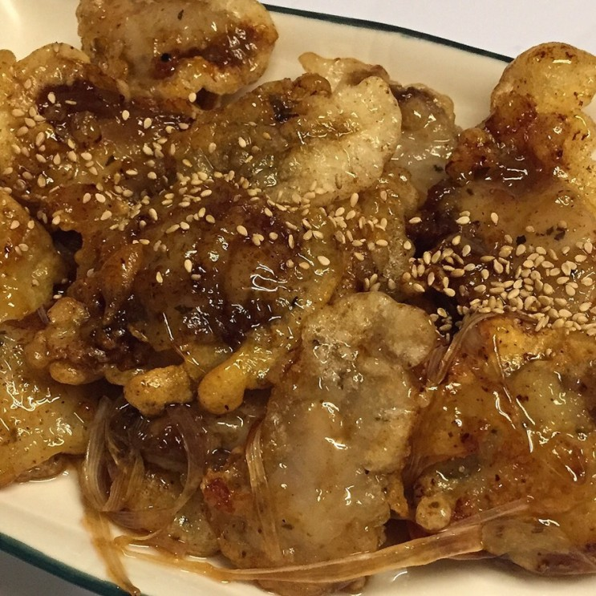

탕수육에 관하여
탕수육
조리방법으로 이동

파생요리
'탕수우육'은 소고기, '탕수기' 또는 '탕수계육'은 닭고기,
'탕수어'는 생선으로 만든 요리이다. 실제로 중국에 가면
'탕수농어(탕추루위 糖醋鱸魚)'나 '탕수잉어(탕추리위 糖醋鯉魚)' 등의
요리를 맛볼 수 있다. 중국 요리는 주재료의 이름에 따라 돼지고기로 만들면
"육"(肉), 닭고기로 만들면 "기"(鷄) 또는 "계육"(鷄肉), 쇠고기로 만들면
"우육"(牛肉)이라는 이름이 붙는다.
중국에서 가장 선호하는 대표적인 고기가 돼지고기이기 때문에 돼지고기를
"육"(肉)으로 부른다. 육류를 대체하여 여러 해물을 이용한
해물 탕수나 야채만으로 만든 야채 탕수, 탕수 만두 등도 생겨났는데,
이 또한 제대로만 하면 훌륭한 요리가 된다.
그 중 대표적인 것이 주로 스님이나 채식주의자들이 먹는 버섯으로
만든 탕수이(茸)다. '버섯 탕수'라고도 한다. 돼지 고기 대신
콩고기를 사용한 콩고기 탕수도 있는데, 탕수이와 마찬가지로 채식주의자나
육식을 금하는 스님들을 위한 대체요리이다.
조리방법
중국 탕추 요리는 대부분 튀김과 소스를 볶듯이 버무려서 제공한다.
한국에서는 튀김 위에 소스가 부어져서 나오는 것이 일반적인 형태이나,
식당에 따라서는 튀김과 소스를 버무리거나 볶아서 내놓는 곳도 있다.
표준국어대사전 및 두산백과사전에서는 탕수육을
'소스를 부어 먹는 요리'라고 정의하고 있으며,
중식조리기능사 실기 시험에서는 소스를 끓이던 팬에 튀김을 넣고
버무려서 완성하는 것이 정석이다.